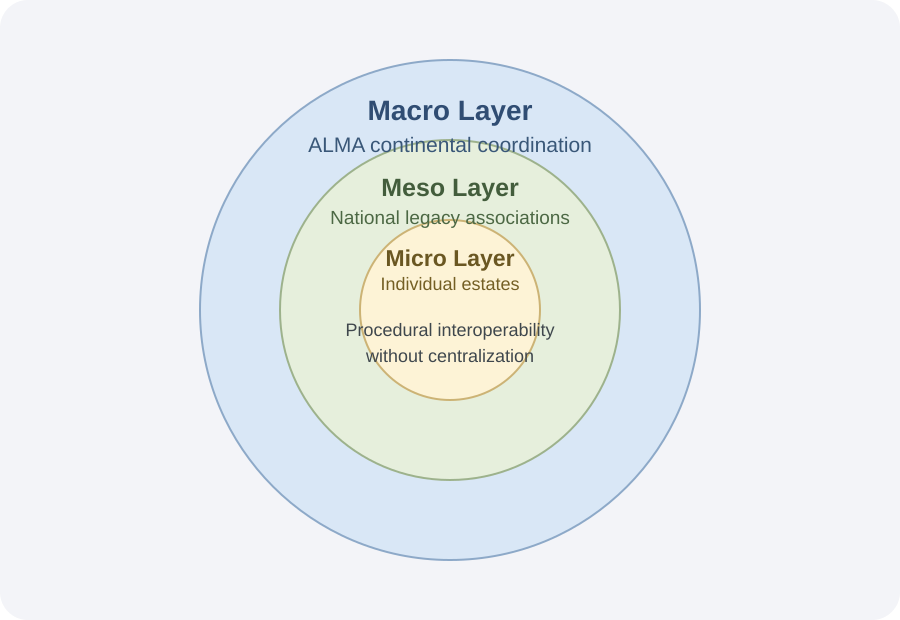

Micro
Individual estates maintain custodianship and local stewardship decisions.
Governance Network
ALMA addresses the problem that remains after technical integrity is introduced: how shared stewardship procedures become normalized, portable, and durable across jurisdictions.

ALMA diffuses standards and practice across estates while preserving estate sovereignty. It does not adjudicate artistic meaning or canon.
The network relies on overlapping centers of authority coordinated through procedural interoperability. The objective is trust in process under plural interpretation, not forced consensus.
Individual estates maintain custodianship and local stewardship decisions.
National legacy associations translate standards to local legal and institutional realities.
ALMA coordinates diffusion, reputation signaling, and protocol evolution at continental scale.
ALMA is defined as a work in progress. It is intended to be revised as practical constraints are surfaced by implementation.